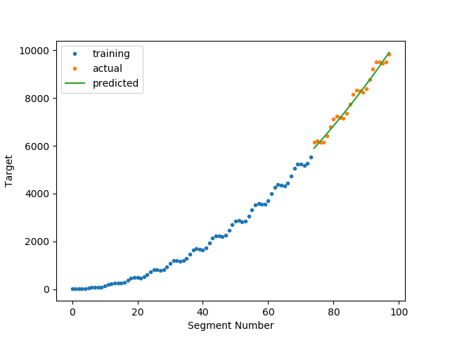

Note
Click here to download the full example code
Continuous Target and Time Series Regression¶
In this example, we use the pipeline to learn a continuous time series target with a regressor
Out:
('X Shape: ', (74, 200))
('N series in train: ', 1)
('N series in test: ', 1)
('N segments in train: ', 74)
('N segments in test: ', 24)
('Score: ', 0.9744288294256207)
('X Shape: ', (24, 200))
('X Shape: ', (24, 200))
('X Shape: ', (24, 200))
('CV Scores: ', fit_time score_time test_score train_score
0 0.005949 0.002528 -0.342113 0.036777
1 0.005780 0.002593 -0.149984 0.126310
2 0.005721 0.002472 -0.239356 0.097838)
# Author: David Burns
# License: BSD
from seglearn.transform import FeatureRep, SegmentXY, last
from seglearn.pipe import SegPipe
from seglearn.split import temporal_split, TemporalKFold
from sklearn.pipeline import Pipeline
from sklearn.linear_model import LinearRegression
from sklearn.model_selection import cross_validate
import matplotlib.pyplot as plt
import numpy as np
import pandas as pd
# for a single time series, we need to make it a list
X = [np.arange(10000)/100.]
y = [np.sin(X[0])*X[0]*3 + X[0]*X[0]]
# split the data along the time axis (our only option since we have only 1 time series)
X_train, X_test, y_train, y_test = temporal_split(X, y)
# create a feature representation pipeline
est = Pipeline([('features', FeatureRep()),
('lin', LinearRegression())])
# SegmentXY segments both X and y (as the name implies)
# setting y_func = last, selects the last value from each y segment as the target
# other options include transform.middle, or you can make your own function
# see the API documentation for further details
segmenter = SegmentXY(width = 200, overlap=0.5, y_func=last)
pipe = SegPipe(est, segmenter)
# fit and score
pipe.fit(X_train,y_train)
score = pipe.score(X_test, y_test)
print("N series in train: ", len(X_train))
print("N series in test: ", len(X_test))
print("N segments in train: ", pipe.N_train)
print("N segments in test: ", pipe.N_test)
print("Score: ", score)
# generate some predictions
ytr, ytr_p = pipe.predict(X_train, y_train) # training predictions
yte, yte_p = pipe.predict(X_test, y_test) # test predictions
xtr = np.arange(len(ytr)) # segment number
xte = np.arange(len(yte)) + len(xtr)
# plot the amazing results
plt.plot(xtr, ytr, '.', label = "training")
plt.plot(xte, yte, '.', label ="actual")
plt.plot(xte, yte_p, label ="predicted")
plt.xlabel("Segment Number")
plt.ylabel("Target")
plt.legend()
plt.show()
# now try a cross validation
X = [np.arange(4000)/100.]
y = [np.sin(X[0])]
tkf = TemporalKFold()
X, y, cv = tkf.split(X, y)
cv_scores = cross_validate(pipe, X, y, cv = cv, return_train_score=True)
print("CV Scores: ", pd.DataFrame(cv_scores))
Total running time of the script: ( 0 minutes 0.095 seconds)